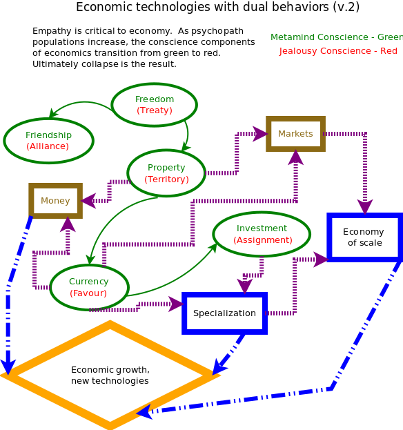

<?xml version="1.0" encoding="UTF-8"?>
<rss version="2.0"
	xmlns:content="http://purl.org/rss/1.0/modules/content/"
	xmlns:wfw="http://wellformedweb.org/CommentAPI/"
	xmlns:dc="http://purl.org/dc/elements/1.1/"
	xmlns:atom="http://www.w3.org/2005/Atom"
	xmlns:sy="http://purl.org/rss/1.0/modules/syndication/"
	xmlns:slash="http://purl.org/rss/1.0/modules/slash/"
	>

<channel>
	<title>The Civilization Gene &#187; economy of scale</title>
	<atom:link href="http://civgene.matthewnewhall.com/archives/category/empaths/economics/economy-of-scale/feed" rel="self" type="application/rss+xml" />
	<link>http://civgene.matthewnewhall.com</link>
	<description>Civilization is the Logic of Compassion</description>
	<lastBuildDate>Thu, 05 Nov 2015 02:42:19 +0000</lastBuildDate>
	<language>en-US</language>
	<sy:updatePeriod>hourly</sy:updatePeriod>
	<sy:updateFrequency>1</sy:updateFrequency>
	<generator>http://wordpress.org/?v=3.6.1</generator>
		<item>
		<title>Economic technologies with dual behavior sets</title>
		<link>http://civgene.matthewnewhall.com/archives/1083</link>
		<comments>http://civgene.matthewnewhall.com/archives/1083#comments</comments>
		<pubDate>Wed, 04 Nov 2015 04:04:54 +0000</pubDate>
		<dc:creator>Matthew Newhall</dc:creator>
				<category><![CDATA[collapse]]></category>
		<category><![CDATA[currency]]></category>
		<category><![CDATA[economics]]></category>
		<category><![CDATA[economy of scale]]></category>
		<category><![CDATA[EMPATHS]]></category>
		<category><![CDATA[investment]]></category>
		<category><![CDATA[jealousy]]></category>
		<category><![CDATA[metamind]]></category>
		<category><![CDATA[money]]></category>
		<category><![CDATA[property]]></category>
		<category><![CDATA[PSYCHOPATHS]]></category>
		<category><![CDATA[specialization]]></category>

		<guid isPermaLink="false">http://civgene.matthewnewhall.com/?p=1083</guid>
		<description><![CDATA[&#160; An economic technology flowchart. Green text are the natural behaviours that differentiate humans from animals (and psychopaths)Red text are best &#8216;work-alike&#8217; substitutions for conscionable behaviour. So much to say on this but a picture is worth a thousand words.    See the background link for details. Edit: v.2 Merged new techs and economic feedback]]></description>
				<content:encoded><![CDATA[<div class="simplesocialbuttons">
<div class="simplesocialbutton ssb-button-googleplus"><!-- Google Plus One--><div class="g-plusone" data-size="medium" data-href="http://civgene.matthewnewhall.com/archives/1083"></div></div>
<div class="simplesocialbutton ssb-button-fblike"><!-- Facebook like--><div id="fb-root"></div><div class="fb-like" data-href="http://civgene.matthewnewhall.com/archives/1083" data-send="false" data-layout="button_count" data-show-faces="false"></div></div>
<div class="simplesocialbutton ssb-button-twitter"><!-- Twitter--><a href="https://twitter.com/share" class="twitter-share-button" data-text="Economic technologies with dual behavior sets" data-url="http://civgene.matthewnewhall.com/archives/1083" rel="nofollow"></a></div>
</div>
<p>&nbsp;</p>
<h3>An economic technology flowchart.</h3>
<p><a href="../../../../../wp-content/uploads/2015/11/dualecon-v.2.png"></a></p>
<p>Green text are the natural behaviours that differentiate humans from animals (and psychopaths)Red text are best &#8216;work-alike&#8217; substitutions for conscionable behaviour. So much to say on this but a picture is worth a thousand words.    See the <a title="Background of civgene" href="../../../../../index.html%3Fpage_id=2.html">background</a> link for details.</p>
<p>Edit: v.2 Merged new techs and economic feedback</p>
]]></content:encoded>
			<wfw:commentRss>http://civgene.matthewnewhall.com/archives/1083/feed</wfw:commentRss>
		<slash:comments>0</slash:comments>
		</item>
	</channel>
</rss>
